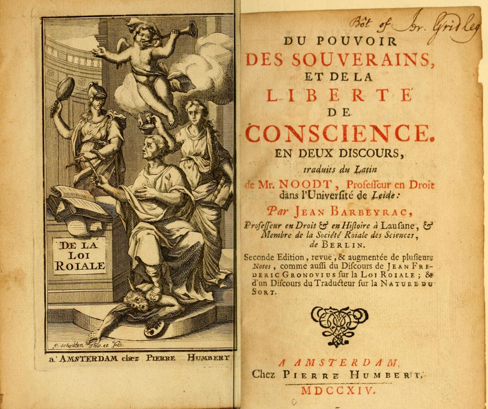

The 1714 title page
French: Amsterdam 1714, title page, scan n10. Highlighted: what bears on Lecky’s note.
On the Power of Sovereigns, and on Liberty of Conscience. In two discourses, translated from the Latin of Mr. Noodt, Professor of Law in the University of Leiden: by Jean Barbeyrac, Professor of Law and History at Lausanne, and Member of the Royal Society of Sciences of Berlin. Second edition, revised, and enlarged with several notes, as also with the Discourse of Jean Frédéric Gronovius on the Royal Law; and with a Discourse by the Translator on the Nature of Lots. Amsterdam, Pierre Humbert. 1714.
Translation: this edition’s draft.
Original French
Du pouvoir des souverains, et de la liberté de conscience. En deux discours, traduits du Latin de Mr. Noodt, Professeur en Droit dans l’Université de Leide: Par Jean Barbeyrac, Professeur en Droit & en Histoire à Lausane, & Membre de la Société Roiale des Sciences, de Berlin. Seconde Edition, revue, & augmentée de plusieurs Notes, comme aussi du Discours de Jean Frederic Gronovius sur la Loi Roiale; & d’un Discours du Traducteur sur la Nature du Sort. A Amsterdam, Chez Pierre Humbert. MDCCXIV.
Lecky (vol. II, ch. V, note 120) adds that both were “lectures delivered near the end of the seventeenth century before the University of Leyden”. Gronovius died in 1671 (Wikipedia), so his lecture at least is earlier than “near the end” of the century; the title page gives no dates for the lectures. Lecky also notes that Noodt attacked “the theological superstitions about usury”; see the usury pages from Chapter VI.
Further down the rabbit hole
Sources that Lecky cites in the notes next to the ones that cite this page.
- Froude, The Nemesis of FaithThe deeper men feel sin, the nearer they drift to Rome: a novel that was burned at Oxford
- Montaigne, EssaisLecky cuts Montaigne short and changes a word
- Hobbes, Leviathan (Latin version), chapter 29Hobbes says classics teach rebellion in monarchies
- Cibrario, Della economia politica del medio evoTurin, 1388: a heretic who held that the Devil made Adam and Eve, and that usury was no sin
- Vindiciae contra tyrannosElijah’s massacre of the priests of Baal as a precedent for lawful rebellion
- Allen, Inquiry into the Rise and Growth of the Royal PrerogativeAn oath of non-resistance that outlived the Revolution by some thirty years


Backlinks
Every place in Rationalism in Europe that links to this page (generated automatically when the site is built).
- Chapter V: note 120